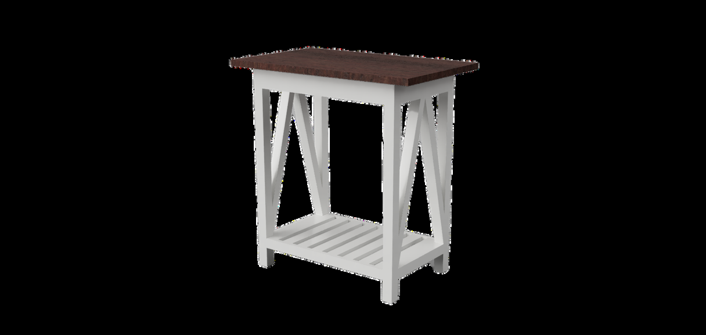
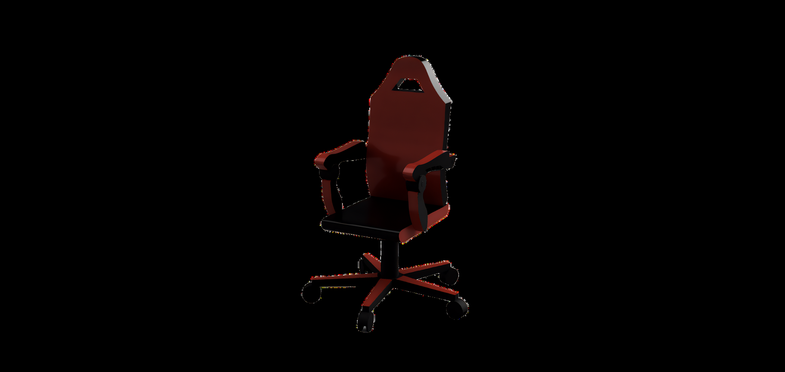

Fusion Design: Parametric CAD & Physical Build
Applied parametric solid modeling in Autodesk Fusion 360 for complex product design. Engineered a multi-part ergonomic chair assembly and designed a dual-tone console table with cross-bracing that was fully translated from 3D CAD into a real-world physical build.
⚙️ Design Process
- Parametric Constraining: Fully constrained sketches ensuring rapid dimensional modifications.
- Joint Simulation: Verified mechanical interference and clearance fits prior to cutting materials.
🔧 Manufacturing Fidelity
- Achieved seamless 1-to-1 match between the virtual CAD render and the final physical wood-and-lacquer construction.